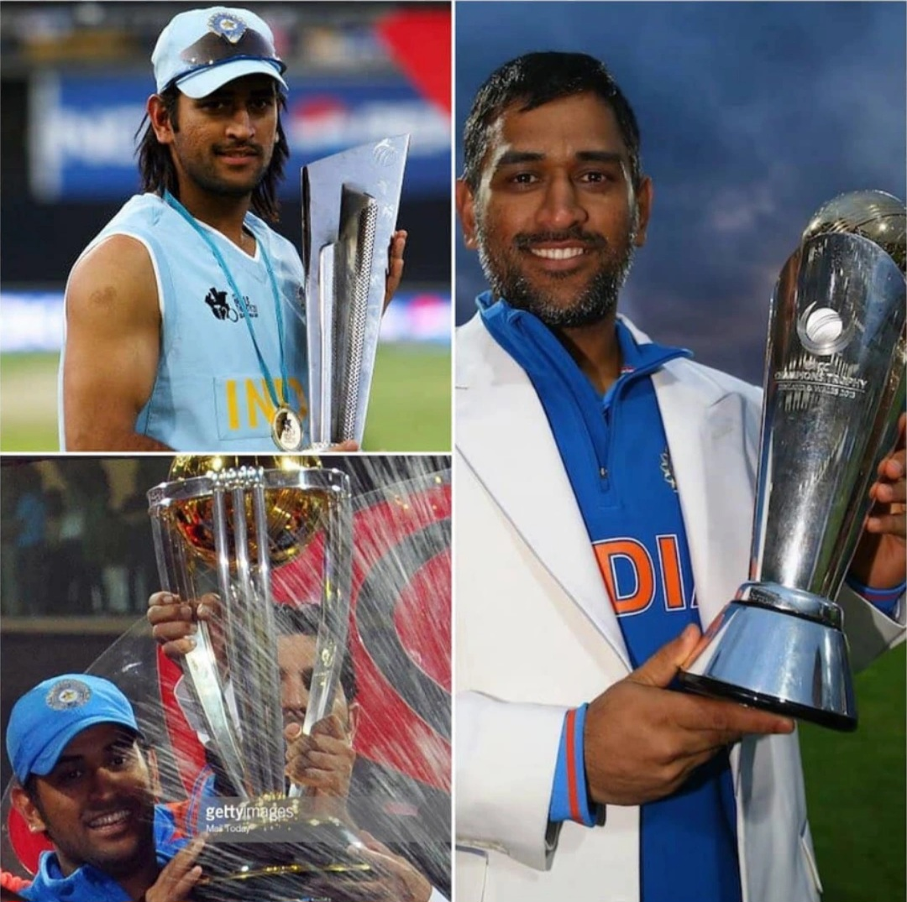
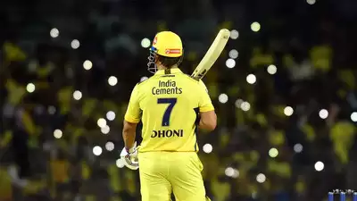

He played as a wicket-keeper for Commando cricket club from 1995 to 1998 and Central Coal Fields Limited (CCL) team in 1998.[14] At CCL, he batted higher up the order and helped the team qualify to the higher division.Based on his performance at club cricket, he was picked for the 1997/98 season of Vinoo Mankad Trophy under-16 championship. In the 1998–99, Dhoni played for Bihar U-19 team in the Cooch Behar Trophy and scored 176 runs in 5 matches. In the 1999–2000 Cooch Behar Trophy, the Bihar U-19 cricket team made it to the finals, where Dhoni made 84 in a losing cause. Dhoni's contribution in the tournament included 488 runs in nine matches with five fifties, 17 catches and seven stumpings.Dhoni made it to the East Zone U-19 squad for the C. K. Nayudu Trophy in the 1999–2000 season and scored only 97 runs in four matches, as East Zone lost all the matches and finished last in the tournament.
Dhoni made his International Debut in december 2004 for bangladesh series.Later on he was picked for pakistan series as well where in the second match of the series he scored 148 runs off 123 deliveries.Dhoni became a regular in the Indian side after the home series against South Africa in November 2005.In December 2005, Dhoni was awarded a "B" grade contract by the BCCI.Dhoni made his test debut in the same month against Sri Lanka during their tour of India at Chennai. Dhoni scored 30 runs in his debut match, that was marred by rain and ended in a draw.Dhoni made his maiden half-century in the second test leading to an Indian win.Dhoni played all the matches in the subsequent tour of Pakistan scoring 219 runs in five ODI matches and 179 runs in five tests including his maiden test century in the second test in Faisalabad.He scored 106 runs across three tests in the home series against England in March 2006 and 177 runs in five ODI series that followed.
Dhoni was appointed as the captain of the Indian squad for the inaugural World Twenty20 in September 2007.Dhoni led India to victory in the tournament after defeating Pakistan in the final.Dhoni was appointed as the captain of Indian cricket team in all formats later. Dhoni scored two centuries during Sri Lanka's tour of India in November 2009 which India won to achieve the top ranking in ICC test ranking for the first time in its history.Dhoni had an excellent year in ODIs in 2009, scoring 1198 runs in just 24 innings, at an average of 70.43 and topped the ICC ODI batsman rankings for several months.He was named as captain and wicket-keeper of the ICC ODI Team of the year.Dhoni led the Indian squad for the 2011 Cricket World Cup co-hosted by India. India won its second ever ODI world cup after defeating Sri Lanka in the final with Dhoni being named man of the match for scoring an unbeaten 91.Dhoni led India to victory in the 2013 ICC Champions Trophy and became the first and the only captain in international cricket to claim all ICC limited overs trophies.
Dhoni led India to victory in the 2016 Asia Cup where India remained unbeaten.Dhoni stepped down as captain of India in January 2017 ahead of the ODI series at home against England.[96] In the second game of the series, he scored 134 off 122 balls, his tenth century in ODIs and his first in over three years.He was named as a wicket-keeper of the 'Team of the Tournament' at the 2017 ICC Champions Trophy in which India finished as runners-up.[98][99] In August 2017, during the fifth and final ODI against Sri Lanka in Colombo, he became the first wicket-keeper to effect 100 stumpings in ODIs when he stumped Akila Dananjaya off Yuzvendra Chahal.He reached the milestone of effecting 400 dismissals in ODIs in February 2018, following the stumping of Aiden Markram in the third ODI of the South Africa tour. Though he had a relatively mediocre series scoring 79 runs in two innings at a strike rate of 63.20 during India's 2018 tour of England, he went past 10,000 ODI runs, becoming the fourth Indian and twelfth overall to do so.In the 2018 Asia Cup title winning campaign, he scored just 77 runs in four innings at an average of 19.25.[105][106] While captaining in the group stage match against Afghanistan due to regular captain Rohit Sharma being unavailable, Dhoni became the first cricketer to lead India 200 times in ODIs.Dhoni aggregated 50 runs from three innings in the home series against West Indies.In the series, he effected the fastest stumping in the history of cricket, clocked at 0.08 seconds, when dismissing Keemo Paul. Dhoni was not selected for the T20I squad for the series that followed and the Australia tour later that season.[112] However, he was included in the squad for the ODI series in Australia.In the three-match series, Dhoni scored half-centuries in all three games with the latter two resulting in wins, helping India secure a 2–1 series victory, their first in a bilateral series on Australian soil and was named player of the series while also becoming the fourth Indian to score more than 1,000 ODI runs in Australia.In April 2019, he was named in India's squad for the 2019 Cricket World Cup.On 9 July 2019, Dhoni played in his 350th and final ODI in the semi-final loss against New Zealand.Dhoni announced his retirement from international cricket on 15 August 2020 as he had not played any international cricket since India's loss in the 2019 world cup semi-final.
Dhoni was acquired by Chennai Super Kings (CSK) for US$1.5 million during the auction for the inaugural season of the Indian Premier League (IPL). He was the most expensive signing in the auction.[124] Dhoni scored 414 runs to lead CSK to the finals in the first season of IPL.[125] Under his captaincy, CSK won the 2010 edition and qualified for Champions League Twenty20.[126] Chennai won the 2010 Champions league.[127] Dhoni scored 392 runs and led CSK to its second consecutive IPL title in 2011.[128] Dhoni led CSK to its second Champions League Twenty20 title in 2014.[129] Dhoni scored 2987 runs from 129 matches in the IPL across the first eight seasons for the Super Kings.[125] Following the two-year suspension of Chennai Super Kings and Rajasthan Royals, two new franchises Rising Pune Supergiants and Gujarat Lions were established for the 2016 Indian Premier League season. Supergiants picked Dhoni as one of their five draft picks on 15 December 2015 for ₹125 million (US$1.5 million).[130] He scored 574 runs in 30 matches across two seasons for the Supergiants.[125]
Dhoni returned to CSK for the 2018 season.He scored 455 runs and led his team to its third IPL title. Dhoni led CSK to the title again in 2021 and was retained for ₹12 crore (US$1.4 million) before the auction for the 2022 season.Dhoni stepped down from captaincy ahead of that season and Ravindra Jadeja was appointed the new captain.However, a month later, Jadeja handed over the captaincy back to Dhoni in the middle of the season.Dhoni led the franchise to victory again the following season.Under his captaincy, CSK became the most successful IPL franchise with five title wins and ten final appearances.Dhoni became the first player to play 200 T20 matches for CSK and holds the record for most appearances in the IPL. Ahead of the 2024 season, Dhoni handed over captaincy to Ruturaj Gaikwad.He marked his 250th appearance for CSK in this season, in a league stage match against Mumbai Indians on 14 April 2024, helping his team secure a 20-run win, following his unbeaten four-ball 20.